从零开始构建 Linux 应用世界：从 initramfs 到应用生态
课程：2026 春季学期《操作系统原理》，Hacking Day
讲师：蒋炎岩（jyy）
官方课程主页：https://jyywiki.cn/OS/2026/
官方讲义：https://jyywiki.cn/OS/2026/lect12.md
视频来源：Bilibili BV17JDWBsEMi
版权说明：课程讲义与幻灯片归蒋炎岩所有，采用 Creative Commons BY-NC 4.0 许可；本电子书是对课堂讲授的书面化重构，保留出处与许可说明。
字幕说明：平台未提供字幕，本稿由本地 faster-whisperlarge-v3转写后结合官方讲义校订。
导语：操作系统如何长出一个世界
(参考时间: 00:00)
这一讲是虚拟化部分的收束，也是一次“寻根”：
- 前面已经观察了进程、地址空间、文件描述符、libc、链接和加载；
execve的本质是把可执行文件描述的内存状态加载进进程；- 动态链接程序的 PC 初始指向解释器，随后由
ld.so补齐依赖； - 可执行文件、运行时库和参数最终构成一个确定的进程初始状态。
接下来要回答两个更大的问题：
- 这些系统调用从哪里来？
- 操作系统加载了第一个进程之后，应用世界如何生长起来？
flowchart LR
A["系统调用与进程状态"] --> B["exe / ld.so / libc"]
B --> C["第一个用户态进程"]
C --> D["文件系统与设备对象"]
D --> E["Shell 与核心工具集"]
E --> F["包管理与应用生态"]
课程的目标可以概括为：
阅读手册，指导 AI 写代码，验证任何系统调用为什么这样设计，并观察它如何支撑整个应用生态。
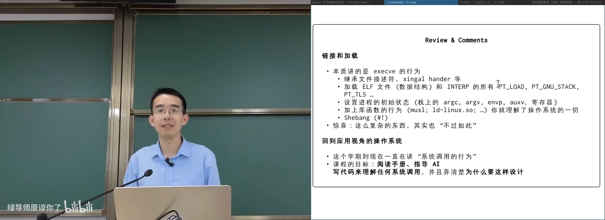
📷 虚拟化部分从进程、对象到链接加载的复习
回到原视频 (00:01:12)
1. 从 UNIX 到 Linux：伟大系统都从零开始
1.1 早期 UNIX 甚至没有 fork
(参考时间: 00:05)
推荐阅读 Dennis Ritchie 的：
最早的 UNIX Shell 没有现代意义的 fork。运行外部程序时，它大致会：
- 关闭不再需要的文件；
- 把标准输入、输出、错误连接到终端；
- 用当时的加载器把程序代码装入内存；
- 执行程序；
- 程序退出后，Shell 自身再被重新加载。
那时一台终端上可能只在 Shell 和当前程序之间来回切换。后来，Ken Thompson 等人用很少的汇编实现进程复制，形成了后来 fork / exec 模型的雏形。
flowchart TD
A["早期 Shell"] --> B["关闭旧文件"]
B --> C["连接 stdin / stdout / stderr"]
C --> D["加载外部程序"]
D --> E["执行程序"]
E --> F["程序退出"]
F --> G["重新加载 Shell"]
G --> A
flowchart LR
A["简单进程状态"] --> B["复制代码与数据"]
B --> C["27 行汇编实现 fork 思想"]
C --> D["Shell 可保留自身，等待子进程"]
D --> E["fork + exec 模型"]
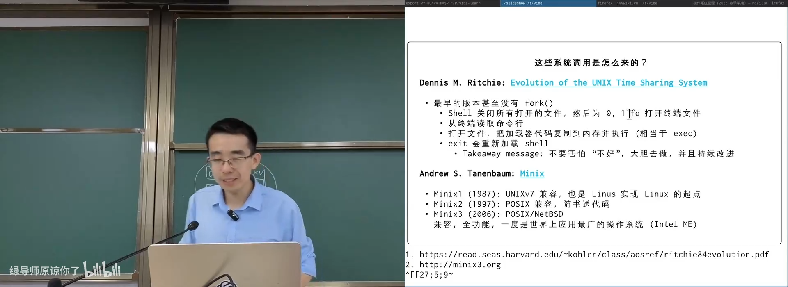
📷 Dennis Ritchie 的 UNIX 演进论文
回到原视频 (00:06:30)
1.2 Minix：完整却为教学而设计
(参考时间: 00:08)
Andrew S. Tanenbaum 编写了 MINIX：
- 1987 年的 MINIX 1 与 UNIX V7 兼容；
- 1997 年的 MINIX 2 兼容 POSIX；
- 2006 年的 MINIX 3 成为成熟系统；
- Intel 管理引擎曾运行 MINIX 3，使其一度成为世界上部署范围极广的操作系统之一。
课程运行了 MINIX 1.7 与 MINIX 2 镜像。即使只有几十兆，它已经有：
- Shell、
vi、cc； - 管道和文本工具；
man手册；- 文件系统、系统调用和库函数；
- 完整源代码，能够在系统内重新编译自身。
flowchart LR
M1["MINIX 1：UNIX V7 兼容"] --> M2["MINIX 2：POSIX 兼容"]
M2 --> M3["MINIX 3：完整可用系统"]
M3 --> INTEL["曾广泛运行于 Intel ME"]
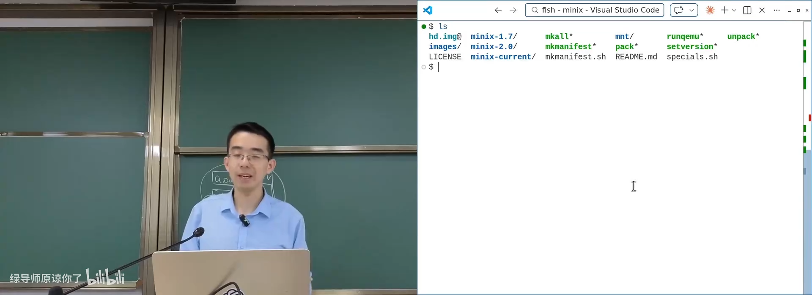
📷 在模拟器中运行 MINIX 1 与 MINIX 2
回到原视频 (00:12:30)
1.3 16 位 MINIX 中的 UNIX 体验
(参考时间: 00:14)
课程现场验证：
vi a.c
cc a.c
./a.out
man 2 fork
输出显示这是 16 位系统，sizeof(int) 的结果也验证了机器模型。MINIX 1 没有现代命令历史，只有 more 而没有 less，但核心 UNIX 工具、手册、管道、C 编译和 a.out 执行都已经具备。
flowchart TD
A["MINIX 16-bit"] --> B["vi 编辑源码"]
B --> C["cc 生成 a.out"]
C --> D["执行 16-bit a.out"]
A --> E["man 查看系统调用与库函数"]
A --> F["cat + pipe + wc 组合命令"]
A --> G["系统内编译自身"]
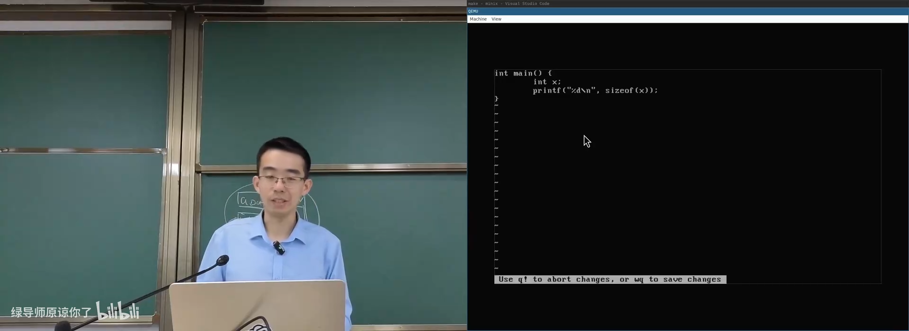
📷 16 位 MINIX 中的 C 程序与工具链
回到原视频 (00:14:50)
1.4 微内核：Send / Receive 的超前设计
(参考时间: 00:18)
MINIX 采用微内核思想。理想中，内核只保留极少数机制，文件系统、进程管理、内存管理等服务运行在用户态，通过消息通信：
send(destination, message)
receive(source, message)
一个进程请求文件服务，就向文件服务进程发消息；请求内存，就与内存服务进程通信。
这个设计在 1987 年非常超前，但当时的机器很慢：
- 系统调用可以直接进入内核；
- 消息传递要构造消息、切换进程、再返回消息；
- 软件开销明显高于直接系统调用。
因此，MINIX 的性能长期不如一体化的 UNIX。Tanenbaum 的目标是教学“操作系统应该如何设计和实现”，而不是赢得性能竞争。
flowchart TD
A["微内核"] --> B["文件服务进程"]
A --> C["进程服务进程"]
A --> D["内存服务进程"]
E["应用"] -->|send/receive| B
E -->|send/receive| C
E -->|send/receive| D
B --> A
C --> A
D --> A
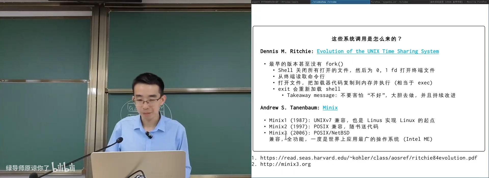
📷 微内核通过消息传递提供服务
回到原视频 (00:18:30)
1.5 1991 年：Linus 与 Linux
(参考时间: 00:21)
1991 年 8 月 25 日，当时 21 岁的 Linus Torvalds 在 comp.os.minix 发布消息：
I'm doing a (free) operating system (just a hobby, won't be big and professional like gnu) for 386(486) AT clones.
早期 Linux：
- 依赖 MINIX 工具链和 MINIX 文件系统；
- 可以和 GNU GCC、Bash 等工具一起工作；
- 开始时只是作者自用的“小爱好”；
- 后来成为服务器、Android、云基础设施和大量设备的共同底座。
flowchart LR
A["MINIX：教学系统"] --> B["依赖 MINIX 工具链"]
B --> C["Linus 开发 386 内核"]
C --> D["GNU 工具加入"]
D --> E["Linux 内核"]
E --> F["服务器 / Android / 云 / AI 基础设施"]
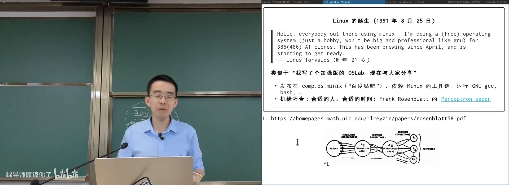
📷 1991 年 Linux 发布邮件的原始片段
回到原视频 (00:22:20)
1.6 合适的人、时间与土壤
(参考时间: 00:23)
Frank Rosenblatt 在 1958 年提出感知机，思想接近今天的神经元模型。但直到 2012 年 AlexNet 出现，大规模神经网络才真正爆发。原因在于：
- 当时缺少足够算力；
- 缺少训练深层网络的成熟方法；
- 缺少研究氛围和产业场景。
类似的故事反复发生：技术思想可能提前几十年出现，但只有“合适的人、合适的时间、合适的土壤”同时具备，才会形成革命。
flowchart TD
A["合适的人"] --> D["突破"]
B["合适的时间"] --> D
C["合适的土壤"] --> D
D --> E["原型"]
E --> F["长期演化"]
F --> G["改变行业"]
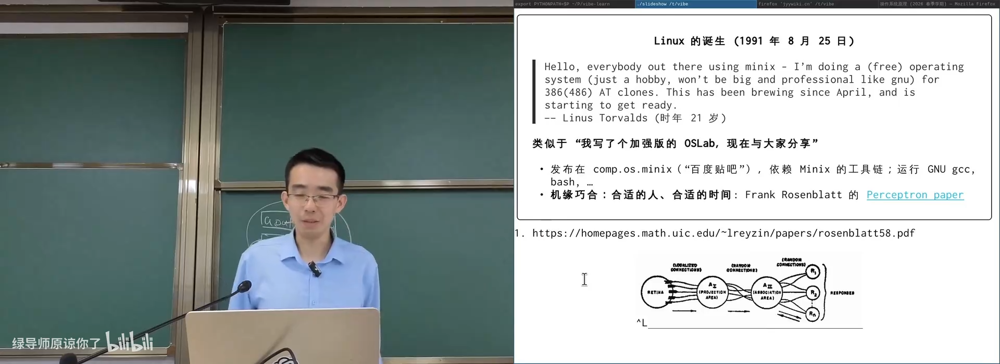
📷 感知机论文与神经网络思想的历史回声
回到原视频 (00:24:50)
1.7 CUDA、AlexNet 与时代反转
(参考时间: 00:25)
2012 年：
- Alex Krizhevsky、Ilya Sutskever、Geoffrey Hinton 正在推进 AlexNet；
- CUDA 已存在，但许多人认为它难用；
- Linus 在公开场合批评 NVIDIA 是“遇到过的最糟糕的公司之一”；
- 十多年后，NVIDIA 成为全球市值最高的公司之一。
技术的发展经常充满反转。一个当时充满缺陷的平台，可能因为生态、算力和时间窗口，成为新时代的关键基础设施。
flowchart LR
A["CUDA：难用的并行编程模型"] --> B["GPU 算力增长"]
B --> C["AlexNet 展示深度学习潜力"]
C --> D["大模型与生成式 AI"]
D --> E["GPU 平台成为核心基础设施"]
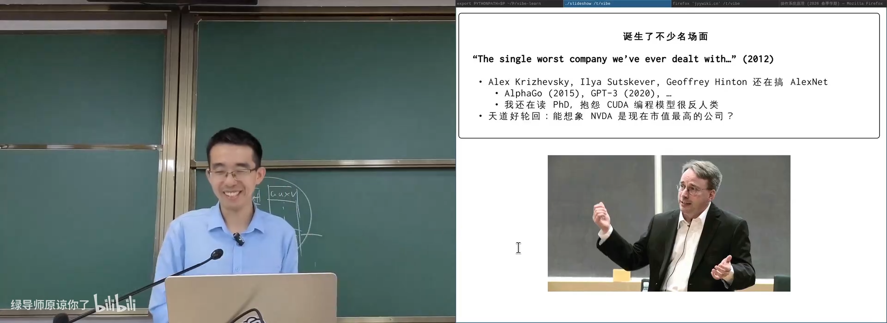
📷 CUDA、深度学习与时代变化的课堂回顾
回到原视频 (00:26:30)
1.8 Tanenbaum 与 Linus 的论战
(参考时间: 00:30)
1992 年，Tanenbaum 在 comp.os.minix 上批评 Linux 采用一体化内核：
Writing a monolithic system is a truly poor idea.
Linus 随即反驳。Ken Thompson 也参与了讨论，大意是：
- 从长远看，微内核可能是未来；
- 但一体化内核更容易实现；
- 也更容易在现实中迅速形成可用系统。
后来的 Linux 不断发展多处理器支持、锁、RCU、模块化和子系统重构。它不是最初那个“hobby kernel”，而是在现实压力下持续演化成了现代大型系统。
flowchart TD
A["Tanenbaum：微内核更好"] --> C["公开论战"]
B["Linus：先做出来并持续改进"] --> C
C --> D["一体化内核快速落地"]
D --> E["多处理器 / RCU / 模块化"]
E --> F["现实世界广泛采用"]
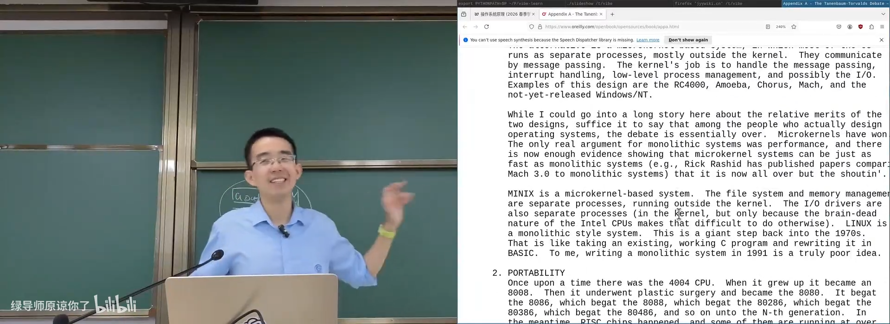
📷 Tanenbaum 与 Linus 的著名论战
回到原视频 (00:31:30)
1.9 Linux 内核规模的长期变化
(参考时间: 00:34)
Linux 从很小的项目成长为千万行级内核：
- Linux 2.0 引入 SMP，但内核并行能力有限；
- Linux 2.4 之后内核本身才能更好地并行运行；
- Linux 2.6 与云计算基础设施同步起飞；
- RCU 等机制让读多写少的场景获得更好的伸缩性；
- 大型子系统经历多轮重构。
flowchart LR
A["Hobby kernel"] --> B["SMP 支持"]
B --> C["内核并行"]
C --> D["Linux 2.6 现代化"]
D --> E["云计算与移动设备"]
E --> F["高度模块化的大型系统"]
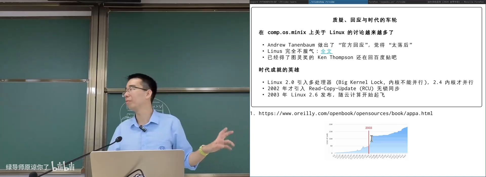
📷 Linux 内核代码规模的增长曲线
回到原视频 (00:34:30)
2. AI 时代的“从 0 到 0.1”
2.1 用 AI 建立个人知识库
(参考时间: 00:36)
讲师展示了如何把论文和 PDF 放入共享目录，再由后台工具：
- 逐页 OCR；
- 提取事实；
- 生成不同长度的摘要；
- 建立长期对话上下文；
- 与原文对照追问。
这种流程把过去“人肉阅读一百页博士论文”的过程压缩到几分钟。关键不再是逐字摘录，而是建立概念之间的关系，并保留验证原文的能力。
flowchart TD
A["PDF / 论文"] --> B["OCR"]
B --> C["事实提取"]
C --> D["多级摘要"]
D --> E["可对话知识库"]
E --> F["追问与交叉验证"]
F --> C
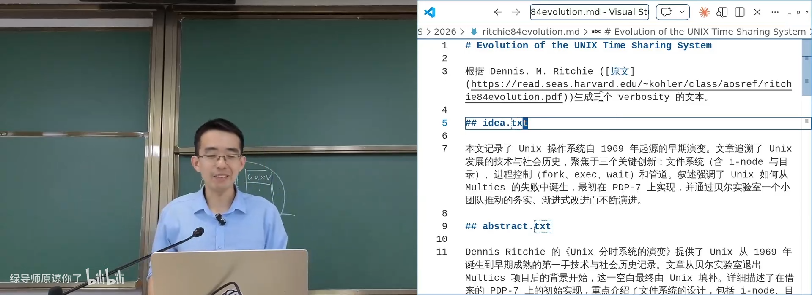
📷 AI 阅读论文、建立摘要与知识库的工作流
回到原视频 (00:37:30)
2.2 从零到 0.1 前所未有地容易
(参考时间: 00:40)
AI 时代最显著的变化是原型能力：
- CrazyOS 可以与硬件进行协同设计；
- 编译器 bug 可以通过大规模自动测试发现；
- 小模型也能在部分任务上超过早期的大模型；
- 只要方向和概念正确，原型很容易生成。
但“容易做出原型”不等于“自动完成有价值的研究”。真正重要的是问题是否重要、验证是否严格、长期演化是否有意义。
flowchart LR
A["一个想法"] --> B["AI 生成原型"]
B --> C["运行与验证"]
C --> D{"有价值？"}
D -- "否" --> A
D -- "是" --> E["持续迭代"]
E --> F["从 0.1 走向成熟"]
2.3 Caveman：压缩输出与 Agent 容错
(参考时间: 00:42)
课堂以 Caveman 项目为例。它用极端压缩的提示要求模型减少客套和冗长说明：
- 能短说就短说；
- 能用符号表达就不写长句；
- 允许语法不完美；
- 依赖 Agent 在失败后重试。
这利用了 Agent 的容错性：单次准确率可能略降，但只要失败能够被检测并重试，总体仍可节省大量 token。
flowchart TD
A["原始长提示 / 长输出"] --> B["极端压缩"]
B --> C["token 减少"]
C --> D["单次错误率可能上升"]
D --> E["Agent 自动重试"]
E --> F{"最终成功？"}
F -- "是" --> G["总体成本下降"]
F -- "否" --> H["恢复更多上下文"]
H --> E
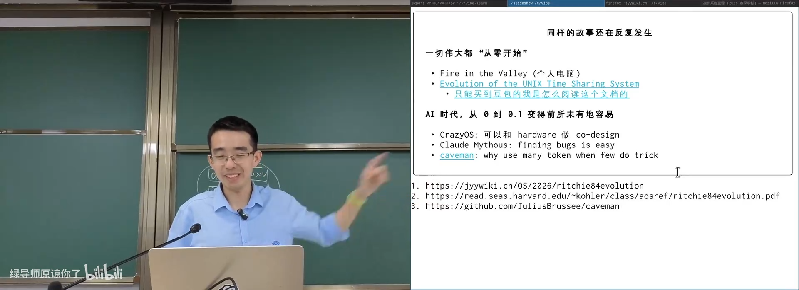
📷 Caveman 压缩模型输出并利用 Agent 容错
回到原视频 (00:42:50)
3. 操作系统从哪里开始运行
3.1 CPU Reset 与确定性起点
(参考时间: 00:46)
计算机系统有一个确定的初始状态：
- CPU Reset 后，寄存器和 PC 进入硬件规定状态；
- Firmware 运行；
- Bootloader 加载操作系统；
- 操作系统加载第一个进程；
- 第一个进程再创建后续进程世界。
flowchart TD
A["CPU Reset"] --> B["Firmware"]
B --> C["Bootloader"]
C --> D["加载 OS 内核"]
D --> E["建立内核对象与系统调用"]
E --> F["加载第一个用户态进程"]
F --> G["应用生态开始生长"]
操作系统启动后，通常不再是普通意义上的“程序”，而成为持续运行的资源管理者：
- 响应系统调用；
- 响应中断；
- 维护进程与地址空间；
- 管理文件和设备；
- 在后台完成缓存回写等任务。
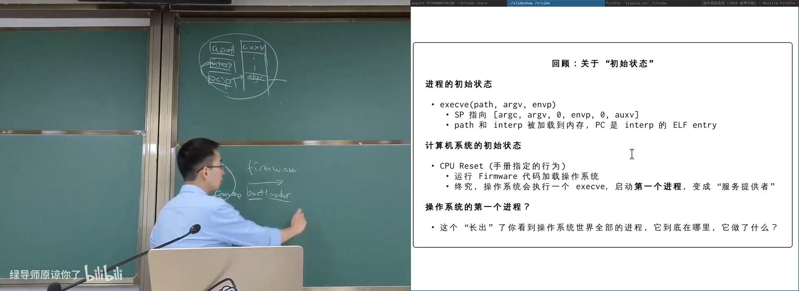
📷 从 CPU Reset 到第一个进程的启动路径
回到原视频 (00:47:30)
3.2 第一个进程是谁
(参考时间: 00:48)
现代 Linux 进程树常以 systemd 为根，但 systemd 通常不是内核直接执行的第一个用户态程序。
临时根文件系统会先启动一个早期的 init，完成：
- 加载磁盘、网卡等必要驱动；
- 挂载真实根文件系统；
- 切换根目录与控制权；
- 最终启动
systemd。
这引出本讲的核心问题：
我们能不能控制 Linux 加载的第一个进程？
flowchart TD
A["内核"] --> B["早期 init"]
B --> C["加载驱动"]
C --> D["挂载真实 rootfs"]
D --> E["pivot_root / switch_root"]
E --> F["systemd"]
F --> G["完整进程树"]
4. 最小二进制与 initramfs
4.1 一个只有系统调用的可执行文件
(参考时间: 00:49)
先构造一个不链接 libc 的最小 ELF：
; 概念示意：直接 write 与 exit
mov rax, 1 ; SYS_write
mov rdi, 1 ; stdout
mov rsi, message
mov rdx, message_len
syscall
mov rax, 60 ; SYS_exit
xor rdi, rdi
syscall
静态编译后，这个程序只依赖系统调用。它不需要动态链接器，也不需要额外的 C 运行时。
在 ARM 主机上还可以借助 QEMU user mode 执行 x86-64 程序：用户态计算指令由模拟器翻译，系统调用则交给宿主 Linux 处理。
flowchart LR
A["x86-64 minimal ELF"] --> B["ARM 主机"]
B --> C["QEMU user mode"]
C --> D["翻译用户态指令"]
C --> E["系统调用转交宿主 Linux"]
E --> F["输出信息并退出"]
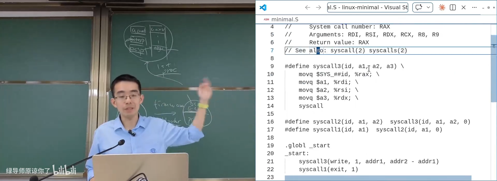
📷 一个仅使用系统调用的最小 ELF
回到原视频 (00:49:40)
4.2 为什么需要 initramfs
(参考时间: 00:51)
execve 需要一个文件路径。但在内核刚启动时，系统还不知道真实根文件系统在哪里，可能来自：
- SATA / NVMe 磁盘；
- USB 存储；
- 网络；
- 加密卷；
- RAID 或逻辑卷。
内核需要一个最早的、完全由启动镜像提供的内存文件系统：
initramfs：initial RAM filesystem。
flowchart TD
A["内核启动"] --> B["真实磁盘尚未挂载"]
B --> C["使用 initramfs"]
C --> D["加载必要驱动"]
D --> E["发现并挂载真实 rootfs"]
E --> F["切换到真正系统"]
4.3 内核如何寻找 /init
(参考时间: 00:52)
内核按一组候选路径寻找第一个用户态程序，例如：
/sbin/init
/etc/init
/bin/init
/bin/sh
也可以由内核命令行指定：
init=/init
rdinit=/init
在最小系统中，initramfs 只需要包含：
/
├── init
└── bin/
└── minimal
这仍然是一个完整地址空间模型中的文件系统，只是它位于内存。
flowchart TD
A["内核包含 initramfs"] --> B["解包为 rootfs"]
B --> C["依次尝试 /sbin/init、/etc/init、/bin/init..."]
C --> D{"找到可执行文件？"}
D -- "是" --> E["execve 第一个进程"]
D -- "否" --> F["继续尝试"]
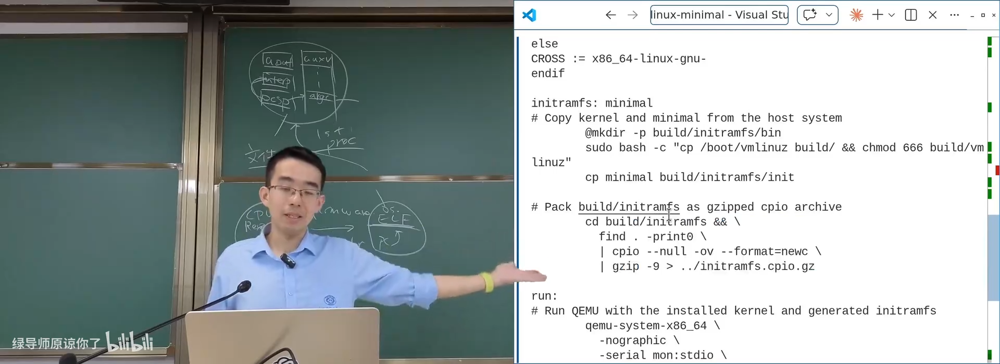
📷 最小 initramfs 的目录结构
回到原视频 (00:52:50)
4.4 打包并交给 QEMU
(参考时间: 00:53)
目录树通常通过 CPIO 归档并压缩：
find . -print0 | cpio --null -ov --format=newc | gzip > initramfs.cpio.gz
QEMU 启动：
qemu-system-x86_64 \
-kernel bzImage \
-initrd initramfs.cpio.gz \
-append "console=ttyS0 init=/init" \
-nographic
flowchart LR
A["initramfs 目录树"] --> B["cpio 归档"]
B --> C["gzip 压缩"]
C --> D["initramfs.cpio.gz"]
D --> E["QEMU -initrd"]
F["bzImage"] --> G["QEMU -kernel"]
E --> H["Linux 启动"]
G --> H
4.5 第一个进程退出会导致内核恐慌
(参考时间: 00:54)
启动成功后，内核日志会显示：
Run /init as init process
This is the minimal binary
随后最小程序调用 exit。如果它是系统唯一的 init，内核会报告：
Kernel panic - not syncing: Attempted to kill init!
普通进程退出只销毁自身；init 退出则意味着用户态世界没有根，内核无法继续维持正常运行。
flowchart TD
A["内核加载 /init"] --> B["minimal binary 输出"]
B --> C["init 调用 exit"]
C --> D{"系统还有 init 吗？"}
D -- "否" --> E["Kernel panic：Attempted to kill init"]
D -- "是" --> F["重新启动 init 或进入恢复流程"]
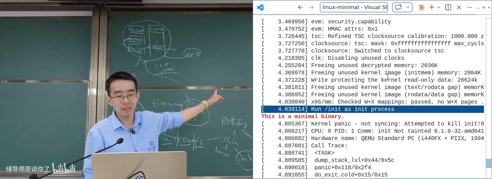
📷 最小 init 退出后导致 kernel panic
回到原视频 (00:56:10)
5. 打开真实系统的 initramfs
5.1 解包不是一条命令就结束
(参考时间: 00:56)
真实的 /boot/initrd.img 可能包含多个压缩片段。课程中 AI 首先解出了约 7.3 MB 内容，但原文件约 23 MB，二者不一致。
讲师提示 AI：
解出来的文件明显比原镜像小，后面一定还有未处理的数据。
AI 随后检查 CPIO trailer 后面的数据，发现了第二段 Zstandard 压缩内容。
flowchart TD
A["initrd.img：约 23MB"] --> B["解出第一段：约 7.3MB"]
B --> C{"与原始大小不一致"}
C --> D["检查 CPIO trailer 后数据"]
D --> E["发现 zstd 第二段"]
E --> F["继续解包完整目录树"]
5.2 一个真实 initramfs 里有什么
(参考时间: 00:59)
解出的目录树类似：
/
├── bin
├── etc
├── lib
├── sbin
├── usr
├── var
├── init
└── ...
里面通常包含：
- BusyBox 提供的精简命令；
- 启动脚本和配置文件；
- 文件系统工具；
- 键盘布局与字体配置；
- 网卡、存储控制器等内核模块；
- 固件二进制；
- 恢复 shell；
- 挂载真实根文件系统所需的一切。
flowchart TD
A["真实 initramfs"] --> B["BusyBox 工具集"]
A --> C["启动脚本 / 配置"]
A --> D["内核模块 / 固件"]
A --> E["文件系统与网络工具"]
A --> F["恢复 shell"]
B --> G["加载驱动并挂载 rootfs"]
C --> G
D --> G
E --> G
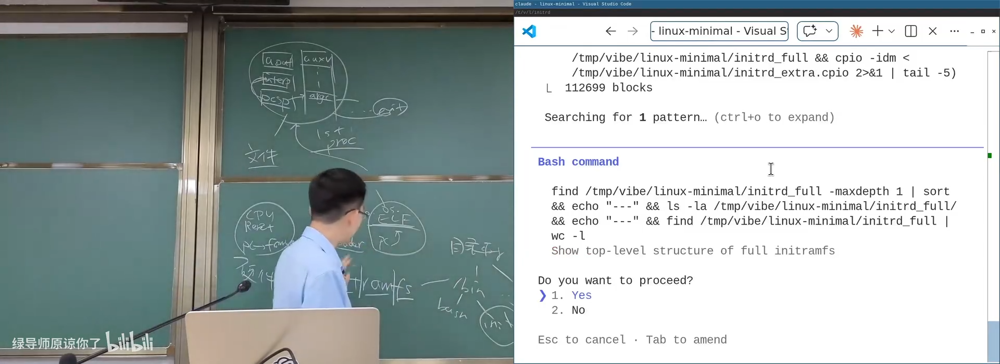
📷 AI 解包真实 initrd 并处理多段压缩
回到原视频 (00:59:30)
5.3 BusyBox：一个二进制文件，一整套命令
(参考时间: 01:01)
BusyBox 把大量常用工具编译成一个可执行文件。执行：
busybox --list
可以看到从 cat、ls、mount 到 wget 的众多命令。
系统通过符号链接让同一程序以不同名称启动：
/bin/ls -> /bin/busybox
/bin/mount -> /bin/busybox
/bin/sh -> /bin/busybox
/usr/bin/wget -> /bin/busybox
程序根据 argv[0] 判断自己应该扮演哪个工具。
flowchart TD
A["execve('/bin/ls', ...)"] --> B["实际加载 /bin/busybox"]
B --> C["BusyBox 读取 argv[0] = ls"]
C --> D["分派到 ls 实现"]
E["execve('/bin/mount', ...)"] --> B
E --> F["argv[0] = mount"]
F --> G["分派到 mount 实现"]
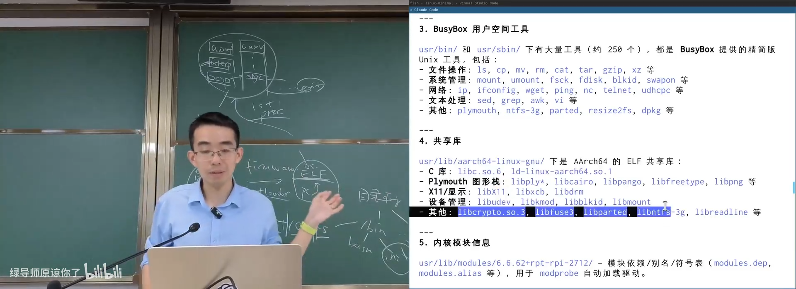
📷 BusyBox 用一个二进制文件提供完整核心工具集
回到原视频 (01:02:20)
6. 从空文件系统创造一个 Linux 世界
6.1 initramfs 中的第一个 Shell
(参考时间: 01:05)
最小 initramfs 可以只包含：
/
├── init
├── bin/
│ └── busybox
└── drivers/
└── ...
init 脚本使用：
#!/bin/busybox sh
随后执行一系列操作：
for cmd in $(busybox --list); do
busybox ln -s busybox "/bin/$cmd"
done
mkdir -p /proc /sys /dev
mount -t proc proc /proc
mount -t sysfs sysfs /sys
insmod /drivers/...
mknod /dev/console c 5 1
exec /bin/sh
flowchart TD
A["内核执行 /init"] --> B["BusyBox 解释脚本"]
B --> C["创建命令符号链接"]
C --> D["创建 /proc /sys /dev"]
D --> E["mount procfs / sysfs"]
E --> F["加载驱动模块"]
F --> G["mknod 创建设备节点"]
G --> H["启动交互 Shell"]
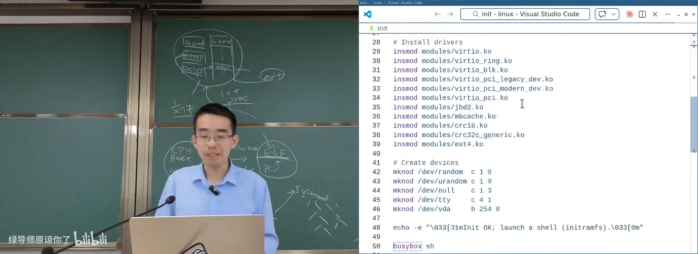
📷 最小 initramfs 启动 BusyBox Shell
回到原视频 (01:05:30)
6.2 三行脚本创建整套命令
(参考时间: 01:08)
创建符号链接的思想可以压缩为：
for command in $(busybox --list); do
busybox ln -s /bin/busybox "/bin/$command"
done
每创建一个符号链接，就相当于让 /bin 中多出一个命令。它们背后都执行同一个 BusyBox。
flowchart LR
A["busybox --list"] --> B["ls / mount / sh / wget / ..."]
B --> C["循环创建符号链接"]
C --> D["/bin 中出现大量命令"]
D --> E["所有入口指向同一个 BusyBox"]
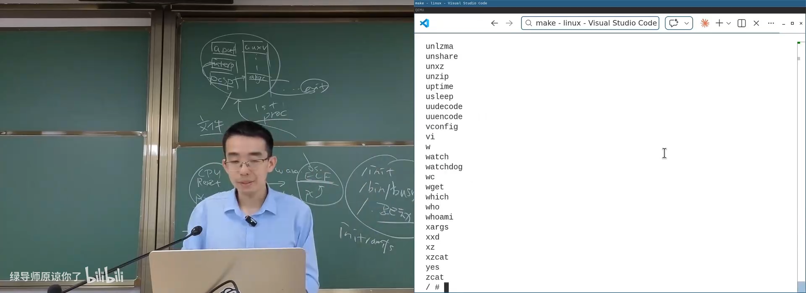
📷 BusyBox 枚举命令并创建符号链接
回到原视频 (01:08:50)
6.3 procfs 让 ps 成为可能
(参考时间: 01:09)
在空世界中，ps 无法工作，因为它没有可读取的进程信息。挂载 procfs：
mount -t proc proc /proc
以后就可以看到：
ps
ls /proc
cat /proc/<pid>/maps
此时进程树中可以看到：
- PID 1 是 initramfs 的
init； - 当前 Shell 是它的子进程；
ps本身也是临时创建的子进程。
flowchart TD
A["空 `/proc`"] --> B["mount -t proc proc /proc"]
B --> C["内核动态生成进程目录"]
C --> D["/proc/1"]
C --> E["/proc/<pid>"]
D --> F["ps 读取进程信息"]
E --> F
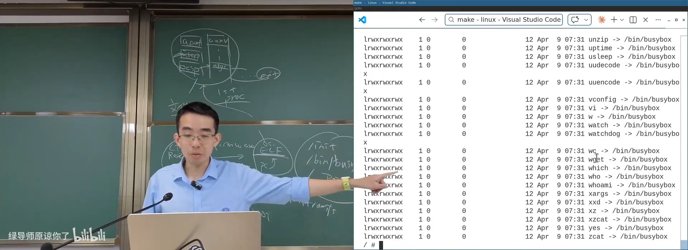
📷 挂载 procfs 后使用 `ps` 观察进程树
回到原视频 (01:10:20)
6.4 设备节点与主次设备号
(参考时间: 01:11)
设备文件不是普通数据文件，而由主设备号和次设备号定位：
mknod /dev/zero c 1 5
mknod /dev/random c 1 8
mknod /dev/urandom c 1 9
mknod /dev/tty c 5 0
mknod /dev/vda b 254 0
flowchart TD
A["用户访问 /dev/random"] --> B["VFS 识别字符设备"]
B --> C["根据 major/minor 找驱动"]
C --> D["驱动读取硬件或内核熵池"]
D --> E["返回字节给用户"]
课程现场创建 Verio 虚拟磁盘 /dev/vda，再用它挂载真实 ext4 文件系统。mount、mknod、insmod 等命令背后全部是系统调用。
flowchart LR
A["mknod /dev/vda b ..."] --> B["创建块设备节点"]
B --> C["mount -t ext4 /dev/vda /mnt"]
C --> D["VFS 调用块设备与 ext4 驱动"]
D --> E["真实文件系统挂载到 /mnt"]
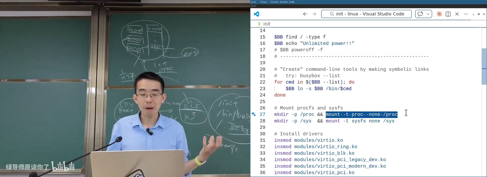
📷 通过 mknod 创建设备并挂载虚拟磁盘
回到原视频 (01:12:00)
7. pivot_root：切换到真正的 Linux
7.1 从临时根到真实根
(参考时间: 01:13)
initramfs 只是启动阶段的临时世界。真实磁盘挂载后，系统需要调用：
int pivot_root(const char *new_root, const char *put_old);
它改变调用进程所在 mount namespace 的根挂载。随后旧根可以卸载或放到过渡目录中。
flowchart TD
A["内存 rootfs"] --> B["挂载真实磁盘到 /mnt"]
B --> C["pivot_root('/mnt', '/mnt/oldroot')"]
C --> D["新根变为真实文件系统"]
D --> E["umount /oldroot"]
E --> F["执行新根中的 init"]
7.2 第二阶段的 init
(参考时间: 01:14)
课程准备了另一份 fsroot：
fsroot/
├── init
└── drivers/
└── e1000.ko
切换到新根后，重新建立：
- BusyBox 命令；
/proc与/sys；/dev设备节点；- 网卡驱动；
- 网络地址；
- 一个简单的 HTTP 服务。
flowchart TD
A["pivot_root 成功"] --> B["执行真实 rootfs 的 init"]
B --> C["重建 BusyBox 链接"]
C --> D["重新挂载 procfs / sysfs"]
D --> E["重新创建设备"]
E --> F["加载 e1000 网卡驱动"]
F --> G["配置网络"]
G --> H["启动 httpd"]
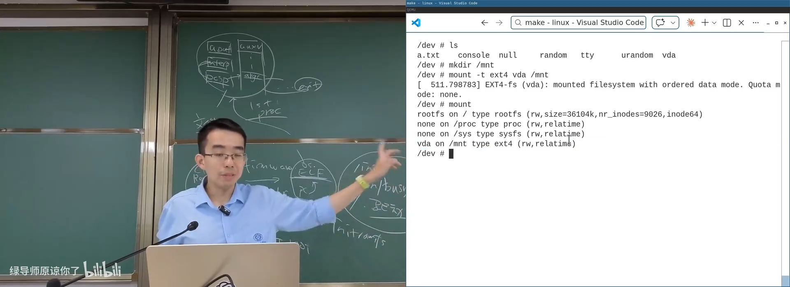
📷 pivot_root 后切换到第二份 init 与真实根文件系统
回到原视频 (01:14:30)
7.3 从串口控制台到 VGA 控制台
(参考时间: 01:16)
早期启动阶段使用串口：
/dev/console
切换后，系统可以使用 QEMU 模拟的 VGA 与终端设备：
echo hello > /dev/tty
字符不仅经过串口传输，而是由内核显示驱动在一个个像素上绘制。终端看似平常的字符输出，背后已经是完整设备驱动和图形显示链路。
flowchart LR
A["Shell write /dev/tty"] --> B["TTY 驱动"]
B --> C["控制台 / 显示驱动"]
C --> D["VGA 帧缓冲"]
D --> E["屏幕像素"]
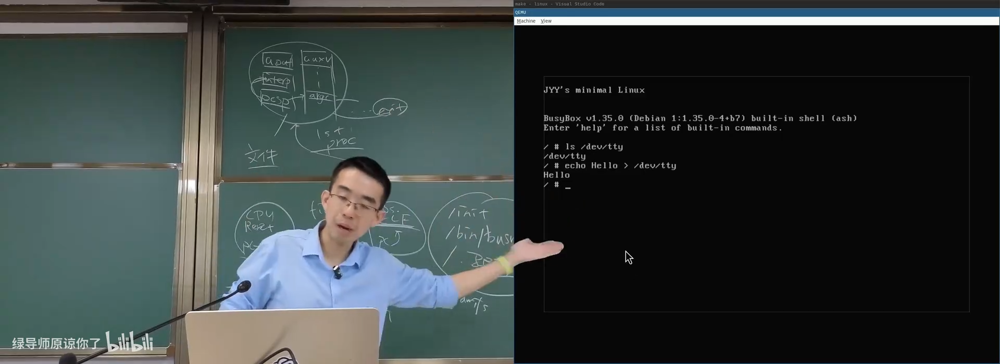
📷 切换到 VGA 控制台并显示字体
回到原视频 (01:16:20)
7.4 网络、HTTP 与端口映射
(参考时间: 01:17)
加载 e1000.ko 后，虚拟网卡变为可用。配置地址并启动服务：
ip addr add 10.0.2.15/24 dev eth0
ip link set eth0 up
httpd -p 8080 -h /
QEMU 把虚拟机的 8080 端口映射到宿主机：
host:8080 -> guest:8080
浏览器访问：
http://localhost:8080/
http://localhost:8080/init
如果没有 index.html，根路径返回 404；但 /init 可以读出虚拟机文件系统中的 init 脚本。
flowchart LR
A["宿主浏览器"] --> B["localhost:8080"]
B --> C["QEMU 端口转发"]
C --> D["虚拟机 httpd"]
D --> E["读取 guest rootfs"]
E --> F["返回 /init 文件内容"]
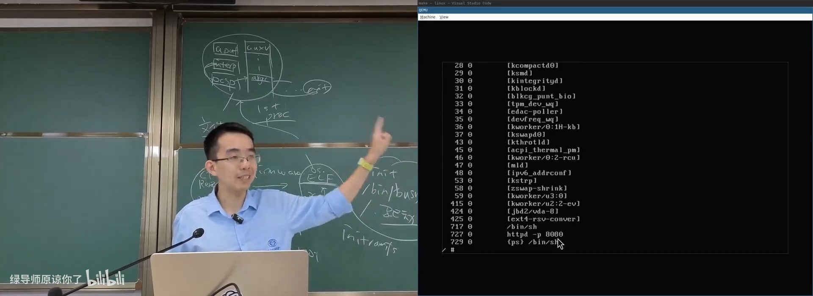
📷 虚拟机内启动 HTTP 服务并通过宿主机访问
回到原视频 (01:17:45)
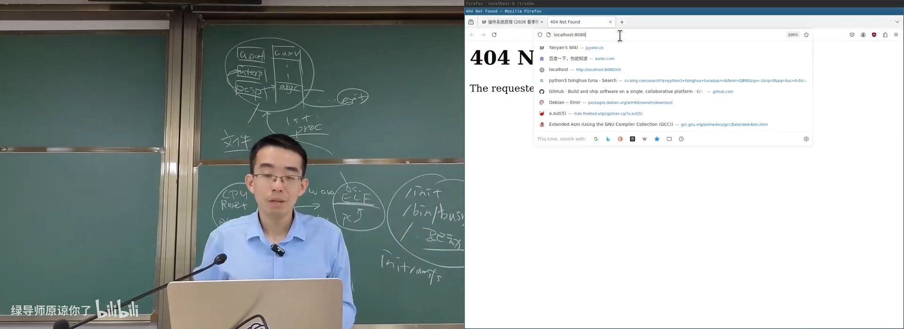
📷 浏览器读取 guest 文件系统里的 `/init`
回到原视频 (01:18:45)
7.5 系统调用真正厉害的地方
(参考时间: 01:19)
从第一个 init 到浏览器显示文件内容，整个过程只使用了操作系统对象与 API：
| 用户看到的操作 | 背后的系统调用 |
|---|---|
| 创建命令 | symlink、execve |
| 创建目录 | mkdir |
| 挂载文件系统 | mount |
| 创建设备 | mknod |
| 加载驱动 | init_module / finit_module |
| 切换根 | pivot_root |
| 配置网络 | socket、ioctl、bind 等 |
| HTTP 服务 | socket、bind、listen、accept、read、write |
| 终端显示 | open、write、ioctl |
flowchart TD
A["第一个 init"] --> B["进程管理 API"]
B --> C["文件与目录 API"]
C --> D["设备与 mount API"]
D --> E["网络 socket API"]
E --> F["HTTP 服务"]
F --> G["浏览器看到文件内容"]
8. 应用视角的操作系统
8.1 确定的初始状态
(参考时间: 01:20)
从硬件到应用可以总结为：
- CPU Reset 提供确定状态；
- Firmware 和 Bootloader 加载内核；
- 内核建立系统调用与对象模型；
- initramfs 提供早期文件系统；
- 内核
execve第一个用户态进程； - 进程通过系统调用创建后续全部世界。
flowchart LR
A["CPU Reset"] --> B["Firmware"]
B --> C["Bootloader"]
C --> D["Kernel"]
D --> E["initramfs"]
E --> F["First Process"]
F --> G["Objects + API"]
G --> H["Applications"]
8.2 操作系统 = 对象 + API
(参考时间: 01:20)
应用视角下，操作系统提供的一切都可以归入：
- 对象：进程、线程、文件、目录、管道、socket、设备、内存映射；
- API：创建、访问、组合、删除和同步这些对象的系统调用；
- 事件：信号、异常、I/O 就绪、进程退出；
- 权限与命名空间：用户、组、mount namespace、网络 namespace。
flowchart TD
A["操作系统"] --> B["对象"]
A --> C["API"]
A --> D["事件"]
A --> E["权限与命名空间"]
B --> F["进程 / 文件 / 设备 / socket"]
C --> G["open / read / write / mmap / mount"]
D --> H["signal / wait / poll / epoll"]
E --> I["user / mount / net / pid namespace"]
从 Android 手机上的应用，到云服务器、数据库和 AI 服务，最终都可以还原到这些对象与调用之上。
9. 应用生态与软件包管理
9.1 生态成就操作系统
(参考时间: 01:21)
内核 API 只是底座。真正让操作系统繁荣的是：
- 语言运行时和标准库；
- 图形、网络、压缩、加密等基础库；
- Shell 与 coreutils；
- 安装、升级和配置工具；
- 开发、调试和构建工具；
- 厂商与开源社区持续发布的应用。
flowchart BT
A["内核：对象与系统调用"] --> B["libc / 运行时"]
B --> C["Shell / coreutils / 基础库"]
C --> D["包管理器与系统工具"]
D --> E["开发工具与应用软件"]
E --> F["开发者社区与用户"]
9.2 从软盘、光盘到在线分发
(参考时间: 01:23)
前互联网时代：
- 软盘和光盘发布；
- 手动运行安装程序；
- CD-Key 容易泄漏和破解。
互联网时代：
- Debian APT；
- RPM；
- App Store；
- PyPI、npm；
- Hugging Face、Ollama；
- 容器与模型仓库。
flowchart LR
A["软盘 / 光盘"] --> B["互联网下载"]
B --> C["集中式应用商店"]
C --> D["发行版包管理"]
D --> E["语言包仓库"]
E --> F["容器 / 模型 / Agent 平台"]
9.3 Debian：2026 年仍在运行的自由系统
(参考时间: 01:24)
课程中的树莓派运行 Debian。Debian 的使命强调：
free software 指软件自由，而不是仅仅免费。
APT 在 1998 年提供：
apt-get install firefox
它已经是一个完整的供应链管理系统，覆盖从开发仓库到测试分支、再到稳定发布的过程。
flowchart TD
A["上游源码 / GitHub"] --> B["Unstable"]
B --> C["Testing"]
C --> D["Stable"]
D --> E["apt-get install"]
F["维护者 / 自动测试 / 用户反馈"] --> B
F --> C
F --> D
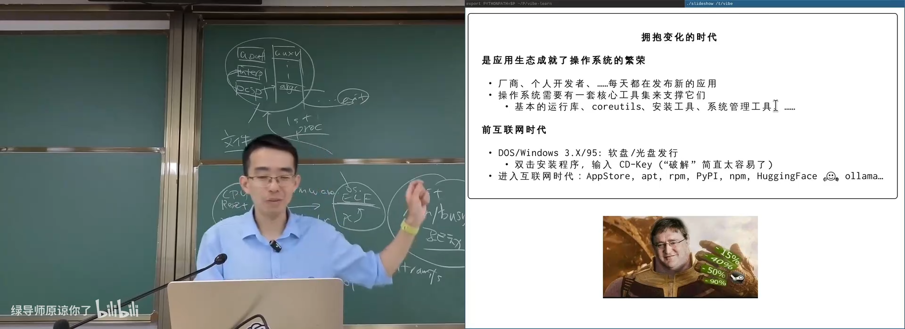
📷 Debian 与 APT 的软件供应链
回到原视频 (01:23:40)
9.4 从一个 .deb 理解应用生态
(参考时间: 01:25)
软件包可以交给 AI 解包并解释。一个 Debian 包通常包含：
package.deb
├── control.tar.xz
│ ├── control
│ ├── preinst
│ ├── postinst
│ └── ...
└── data.tar.xz
└── 实际安装文件
安装流程大致为：
Preinstall → Unpack → Configure → Triggers → Postinstall
control 文件描述包名、版本、架构、维护者、依赖和描述；data.tar.xz 包含最终文件。
flowchart TD
A["下载 .deb"] --> B["读取 control"]
B --> C["检查依赖与冲突"]
C --> D["preinst"]
D --> E["解包 data.tar.xz"]
E --> F["configure"]
F --> G["triggers"]
G --> H["postinst"]
H --> I["安装完成"]
安全提醒：
postinst等维护脚本可以执行任意代码，因此软件包仓库和依赖链是供应链攻击的重要目标。下载和构建未知包时应使用隔离环境，并检查来源与脚本。
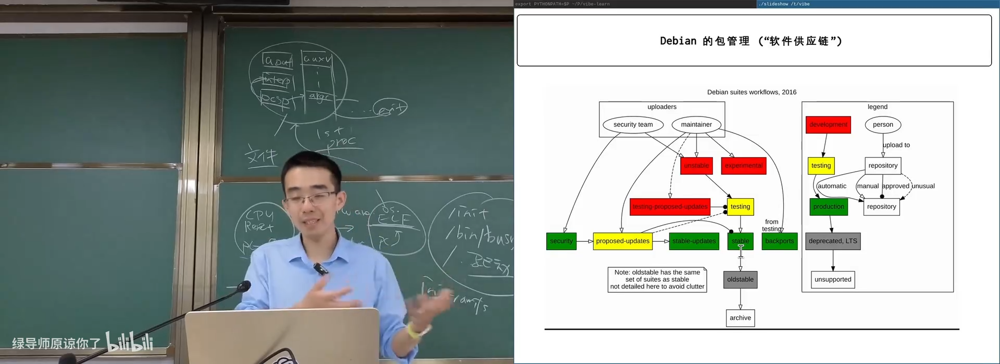
📷 解包软件包并观察安装脚本与数据
回到原视频 (01:25:40)
10. 讲义延伸：AI 时代的应用生态
编者说明：本节来自官方讲义在视频结束后的继续讨论，单独标注，不与课堂原话混同。
10.1 建设生态的关键是人
应用生态的关键不只是代码，而是能理解系统、维护设计并持续交付的开发者。过去许多大型系统的复杂度来自：
- 接口设计不合理；
- 抽象边界模糊；
- 错误处理分散；
- 版本与依赖失控；
- 缺少可观察性；
- 新人难以进入和维护。
课程的意义之一是让人“见识”不同设计，理解它们为什么好、为什么坏，以及如何演化。
10.2 应用程序会退化为工具与服务吗
官方讲义提出一个开放问题：
- Agent 时代，应用是否只剩工具与服务？
- GUI 是否会消失，或变成由 Agent 驱动的界面协议？
- A2UI 一类协议是否会让 Agent 直接构造界面？
- 手机与桌面应用的交互模式会如何变化？
flowchart TD
A["传统 GUI 应用"] --> B["Agent 调用工具"]
A --> C["服务化 API"]
B --> D["Agent 驱动的界面"]
C --> D
D --> E["用户描述目标"]
E --> F["Agent 组合工具、服务与界面"]
延伸阅读：
11. 总结：从第一个进程到完整应用世界
这一讲把历史、内核启动与发行版生态连接起来：
- 早期 UNIX 从极简 Shell 和缺少
fork的状态一路演化； - MINIX 用完整源代码展示了可教学、可自举的 UNIX；
- Linux 从一个人的 hobby kernel 成长为现代基础设施；
- 微内核与一体化内核的争论直到今天仍在影响系统设计；
- Linux 启动存在确定的状态链条：CPU Reset → Firmware → Bootloader → Kernel → First Process；
- 内核通过 initramfs 获得第一个可执行文件；
- BusyBox 用一个二进制文件构建完整命令集；
mount、mknod、insmod等工具都由系统调用实现；pivot_root把临时 rootfs 切换为真实根文件系统；- 设备、网络、HTTP 服务都可以从第一个 init 逐步构建；
- 应用生态建立在系统调用、库、核心工具和包管理器之上；
- Debian 与 APT 展示了开源软件供应链的长期演化；
- Agent 时代可能继续改变应用、GUI 和包分发的形态。
flowchart LR
A["UNIX"] --> B["MINIX"]
B --> C["Linux Kernel"]
C --> D["initramfs + init"]
D --> E["Objects + System Calls"]
E --> F["Shell / BusyBox / Drivers"]
F --> G["Debian / APT / Packages"]
G --> H["Applications + Agents"]
最终，操作系统给应用世界提供的东西可以浓缩为：
对象 + API + 事件 + 权限模型。
从第一个进程开始，屏幕上看到的每一个文件、设备、网络连接和像素，都可以沿着系统调用找到实现路径。这就是应用视角的操作系统，也是现代应用生态能够持续生长的基础。
附：官方参考与延伸阅读
以下链接来自官方讲义第 12 讲及课堂内容：
- Evolution of the UNIX Time-Sharing System
- MINIX 3
- MINIX 1 and 2, Quick and Dirty editions
- Frank Rosenblatt, The Perceptron
- Tanenbaum–Torvalds debate
- MINIX demo
- Minimal Linux demo
- Linux demo
- Linux kernel command-line parameters
- BusyBox
- Debian package example
- A2UI
- Caveman
官方课程资料：
版权与署名：本讲课程材料由蒋炎岩（jyy）编写。课程讲义与幻灯片采用 Creative Commons BY-NC 4.0 许可；本电子书保留课程出处、作者署名与许可说明。